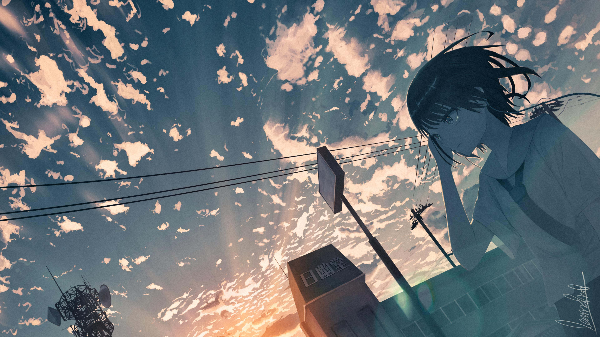

japoneses usan esta palabra para definir a los dibujos animados en general. Y en nuestro Pais la palabra ANIME la utilizamos solo para referirnos a la Animaciones Japonesas. Generalmente el Anime se refiere al sistema tradicional de dibujo de celdas, pero tambien se aplica a la animacion creada por Computadoras como por ejemplo Final Fantasy. Aunque no lo creas esta palabra tiene su historia, en un principio se conoció el término "Japanese Animation" luego se transformó en la palabra "Japanimation" para quedar de forma definitiva como anime.
